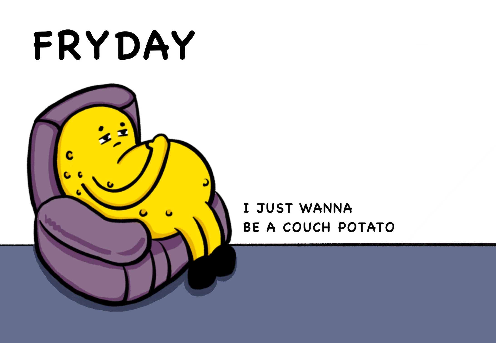

Video from this Vimeo Learn Resource
Introduction
My project is about the poster design of my own brand "FRYDAY" and its IP image. The background of this brand is derived from a negative social phenomenon - involution.
Concept and Background Research
"Involution" can be explained as a phenomenon that when a certain cultural pattern reaches its final form, it neither stabilizes nor transforms into a new form, but keeps on becoming more and more complex internally. Based on this negative social phenomenon, the brand takes it as the source of inspiration and develops the design theme of the brand and IP image around "involution.", calling on people to oppose inward roll and enjoy a relaxed and happy life. Leave your worries behind. In the brand name, "FRYDAY" is the same as "Friday", which is the English word for Friday, meaning to welcome the weekend and relax life. Based on the brand design background - the phenomenon of involution, the IP image is inspired by the word "Lie Down", which is a very hot Internet word recently, meaning "I don't want to roll inward anymore, choose to Lie Down ".The English expression of "Lie Down" is derived from the English word "couch potato", therefore, the brand IP extracts the concept from it and uses the image of "potato" as the The brand IP extracts the concept from it and uses the image of "potato" as the element of the brand IP. The IP image is called "Patata", which is derived from "Hakuna matata", an ancient and magical African proverb that means from now on, no worries, no dreams come true. It is the communication concept of this brand and IP image. In addition, the word "patata" means potato in Spanish.
The game's protagonist is a couch potato opposed to the inward roll in weight loss, the elements of the game from the weight loss in the fitness equipment and high-calorie food. The game will deduct 1 point when the character touches the fitness equipment and add 1 point when he touches the food, and the game will end when the time is over. This game is designed in the details of processing, in touching the fitness equipment, the potato's smile disappears, in touching the food, the potato will turn into a smiley face.
Technical Implementation
Handpose is a machine-learning model that allows for palm detection and hand-skeleton finger tracking in the browser. It can detect a maximum of one hand at a time and provides 21 3D hand keypoints that describe important locations on the palm and fingers.
Reflection and Future Development
Trying out camera interactive technology in my work was a new challenge for me, and I found the process to be very interesting. I was satisfied with the results of combining this technology with my brand and creating a game. In my future works, I plan to explore more computer art-related techniques, such as sound interaction or gyroscopic sensing technology, to provide a wider range of interactive methods between my works and the audience.
References
- https://www.geeksforgeeks.org/debouncing-in-javascript/
- https://learn.ml5js.org/#/reference/handpose